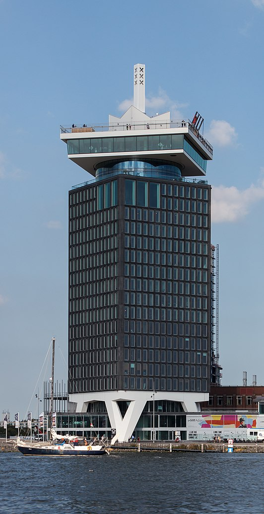
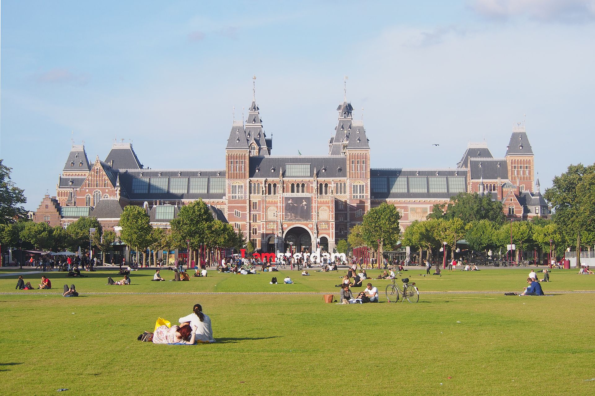

 A'dam Lookout is een observatiedek met een ongeëvenaard panoramisch uitzicht over Amsterdam. Op het dak van A’DAM Toren prijkt ‘Over The Edge’: Europa’s hoogste schommel. Daredevils en trillseekers schommelen op 100 meter hoogte heen en weer over de rand van de toren met Amsterdam onder hun voeten.
 Het Museumplein is een plein en stadspark in het stadsdeel Amsterdam-Zuid, net ten zuiden van Amsterdam-Centrum. Het dankt zijn naam aan het in 1885 geopende Rijksmuseum dat aan het plein is gelegen. Ook het Stedelijk Museum, het Van Gogh Museum, het Moco Museum, de jaarlijkse expositie ArtExpoAmsterdam en het Concertgebouw liggen aan het Museumplein.